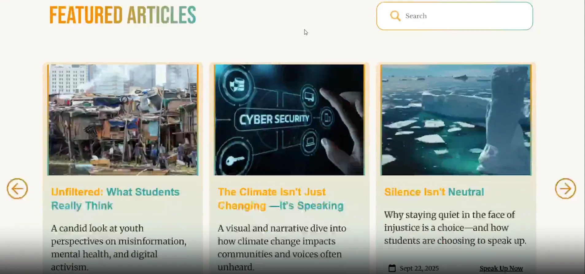
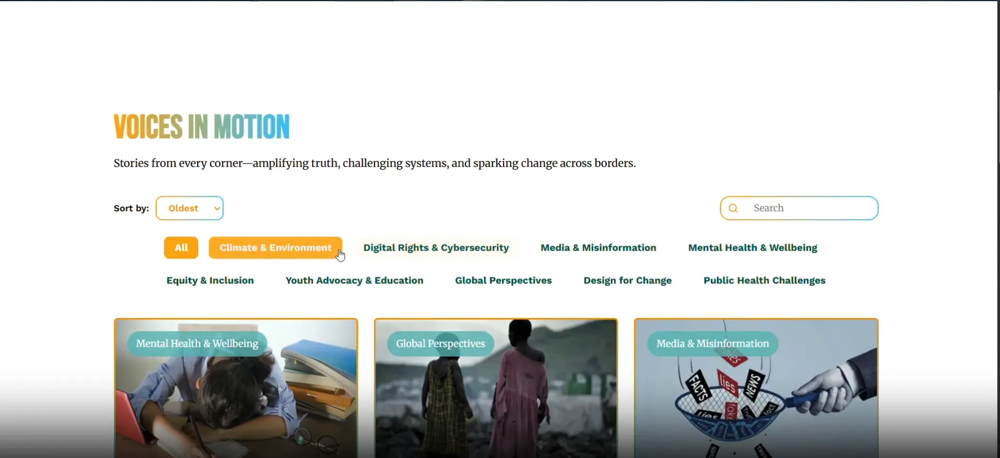
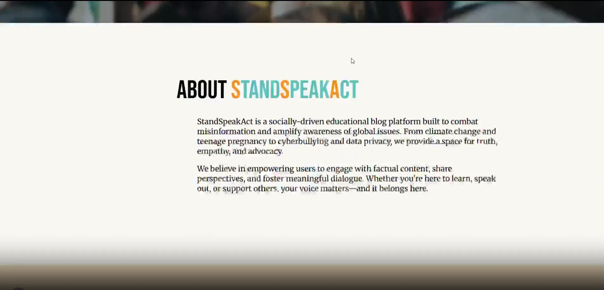
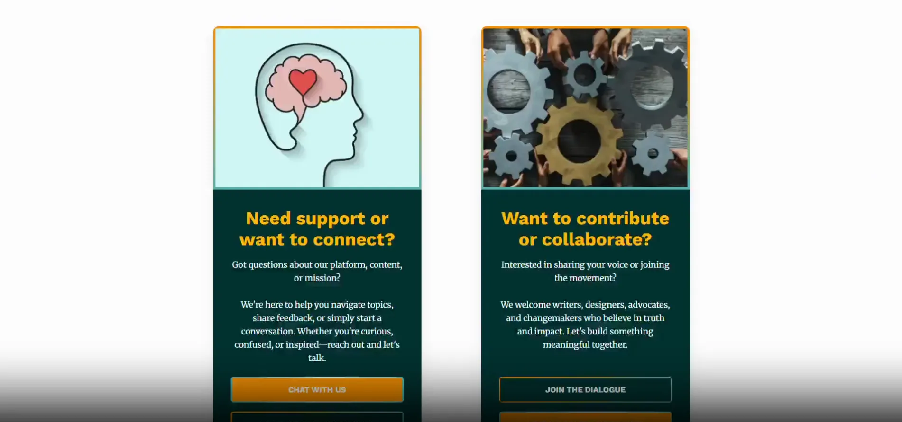

StandSpeakAct Blog
Responsive news website with dynamic content loading and animations.
Walkthrough Jump to a feature in the demo




PURPOSE
StandSpeakAct is a dynamic blogging platform designed to amplify voices on current global trends and social issues. The project focuses on high-readability typography and a robust content management structure, providing a space for meaningful discourse and real-time updates on world events.
CORE FEATURES
- Dynamic content feed categorized by trending topics and urgency.
- Specialized UI experience for more dynamic experience.
- SEO-optimized article pages with rich media integration.
- Filtering of articles based on the user's interests.
TECHNOLOGIES USED
HTML / CSSResponsive Editorial Design
JavaScriptDynamic Content Loading & UX Animations
PHP / NoSQLDynamic Article Accessibility in the Database
InfinityFree / FileZillaOnline Deployment
TEAM
 Satwinder Jeerh
Satwinder Jeerh Karl Guiao
Karl Guiao- Elisha Gania
- Kimberly Puno
- Shane Cordero